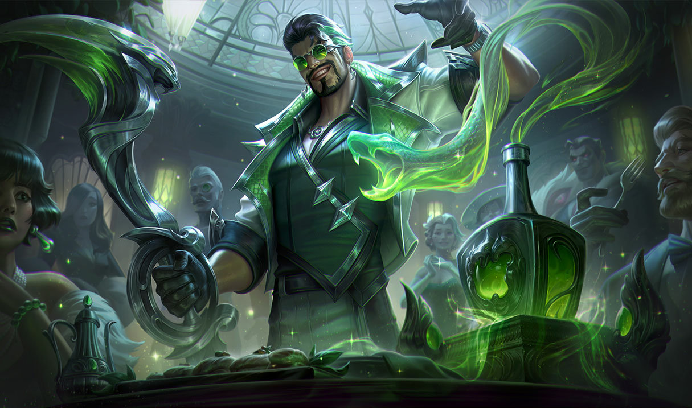

The Glorious Executioner


Draven is a champion in the online game League of Legends. He is a ruthless and arrogant executioner who wields two spinning axes as his primary weapons. Draven's playstyle is focused on dealing damage and overwhelming opponents with his raw power.
In Noxus, warriors known as reckoners face one another in arenas where blood is spilled and strength tested—but none has ever been as celebrated as Draven. A former soldier, he found that the crowds uniquely appreciated his flair for the dramatic, not to mention the spray of blood from each of his spinning axes. Addicted to the spectacle of his own brash perfection, Draven has sworn to defeat whomever he must to ensure that his name is chanted throughout the empire forever more.

Draven gains bonus gold for killing minions and champions if he catches his spinning axes, he can stack up to multipale addoration stacks.

Draven's next basic attack will deal bonus physical damage and cause his axe to ricochet off the target, allowing him to catch it and reduce the cooldown of this ability.

Draven gains increased movement speed and attack speed for a short duration, with additional bonuses if he catches his spinning axe.

Draven throws his axes, dealing physical damage and knocking aside all enemies hit in a cone-shaped area.

Draven hurls two massive spinning axes in a line, dealing physical damage to all enemies hit. The axes return to Draven after reaching the end of their path, dealing the same amount of damage on the way back.